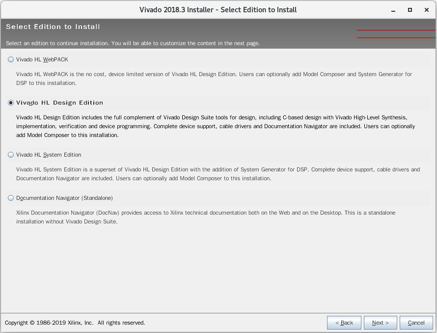
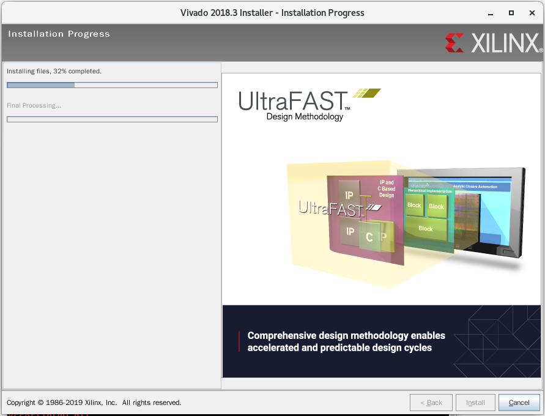

软件安装¶
ISE 安装¶
ISE 最后一个版本是 14.7，该版本在LINUX 系统中只能支持 CentOS 6，在 CentOS 7 中存在问题。
tar -xvf Xilinx_ISE_DS_Lin_14.7_1015_1.tar
cd Xilinx_ISE_DS_Lin_14.7_1015_1
./xsetup


Altera 安装¶
下载需要的所有文件，放在一个目录下
arria10-19.2.0.57.qdz ModelSimProSetup-19.2.0.57-linux.run
cyclone10gx-19.2.0.57.qdz QuartusProSetup-19.2.0.57-linux.run
modelsim-part2-19.2.0.57-linux.qdz stratix10-19.2.0.57.qdz
chmod +x QuartusProSetup-19.2.0.57-linux.run
./QuartusProSetup-19.2.0.57-linux.run


在安装路径下有以下文件
devdata licenses modelsim_ase qsys syscon
ip logs nios2eds quartus uninstall
quartus/bin 文件夹内存放 quartus 启动的脚本
./quartus
modelsim_ase/bin 文件夹内存放 modelsim 启动的脚本
./vsim
CentOS 7 中 ModelSim 对依赖软件 freetype 版本有一定的要求。经过测试表明 2.4.12 版本可以支持。通常采用 modulefile 来对系统中的软件进行多版本控制，以下是该软件的配置示例。
#%Module 1.0
# 这一行一般 module file 都有
set _module_name [module-info name]
set is_module_rm [module-info mode remove]
set sys [uname sysname]
set os [uname release]
# 冲突标识符gcc
conflict freetype
set FREETYPE_CURPATH /opt/freetype/2.4.12
set FREETYPE_LEVEL 2.4.12
set FREETYPE_MAJLEVEL 2.4
# 所需路径
prepend-path PATH $FREETYPE_CURPATH/bin
prepend-path LD_LIBRARY_PATH $FREETYPE_CURPATH/lib
prepend-path LIBRARY_PATH $FREETYPE_CURPATH/lib
linux usb blaster权限的设置¶
对于错误 error (209053): unexpected error in jtag server – error code 89，它产生的原因在于，在linux系统下，Quartus ii 的驱动 USB-Blaster 只能有 root 用户使用，而普通用户是无权使用的。解决思路是更改 USB-Blaster 的使用权限，使得普通用户也能使用。
因为usb 默认只有root才有权限访问，所以只要把权限修改一下即可，usb blaster 链接上电脑
[root@localhost 003]# lsusb
Bus 002 Device 002: ID 8087:8000 Intel Corp.
Bus 002 Device 001: ID 1d6b:0002 Linux Foundation 2.0 root hub
Bus 001 Device 002: ID 8087:8008 Intel Corp.
Bus 001 Device 001: ID 1d6b:0002 Linux Foundation 2.0 root hub
Bus 004 Device 001: ID 1d6b:0003 Linux Foundation 3.0 root hub
Bus 003 Device 004: ID 0bda:0184 Realtek Semiconductor Corp. RTS5182 Card Reader
Bus 003 Device 013: ID 09fb:6001 Altera Blaster
Bus 003 Device 003: ID 046d:c077 Logitech, Inc. M105 Optical Mouse
Bus 003 Device 002: ID 413c:2107 Dell Computer Corp.
Bus 003 Device 001: ID 1d6b:0002 Linux Foundation 2.0 root hub
说明 /dev/bus/usb/003/013 这个文件现在就是我们的 Altera Blaster 设备
cd /dev/bus/usb/003
chmod 666 013
Vivado 安装¶
tar -zxvf Xilinx_Vivado_SDK_2018.3_1207_2324.tar.gz
cd Xilinx_Vivado_SDK_2018.3_1207_2324
./xsetup

点击 continue选择不下载最新版本，然后点击Next进入下一步

点击三个可选框，然后点击Next进入下一步
选择 Vinado HL Design Edition，然后点击Next进入下一步

直接点击Next进入下一步

选择安装目录，这里我选择安装到 /home/wuhongyi/Xilinx ，然后点击Next进入下一步
等待安装完成

将 vivadoLicence.lic 文件复制到 安装目录，这里为 /home/wuhongyi/Xilinx
安装完成之后会弹出以下界面

点击左上方的 Load License，选择我们的 vivadoLicence.lic 文件
然后点击左上方的 View License Status 可查看破解的IP核